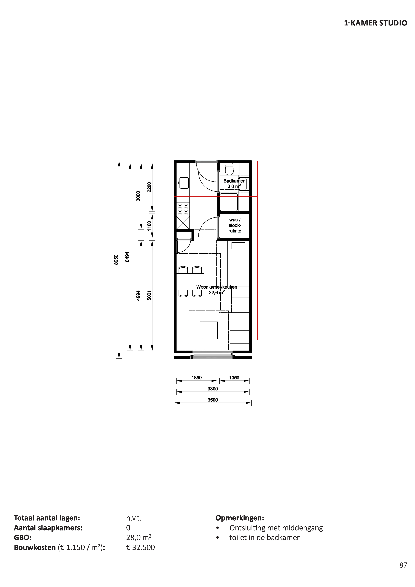
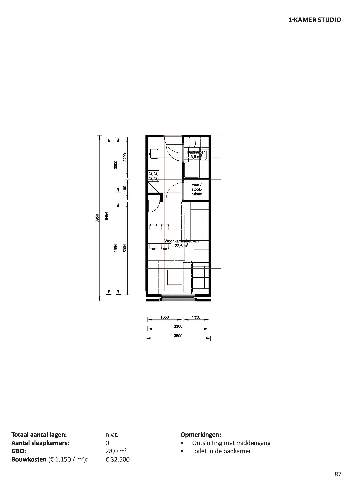
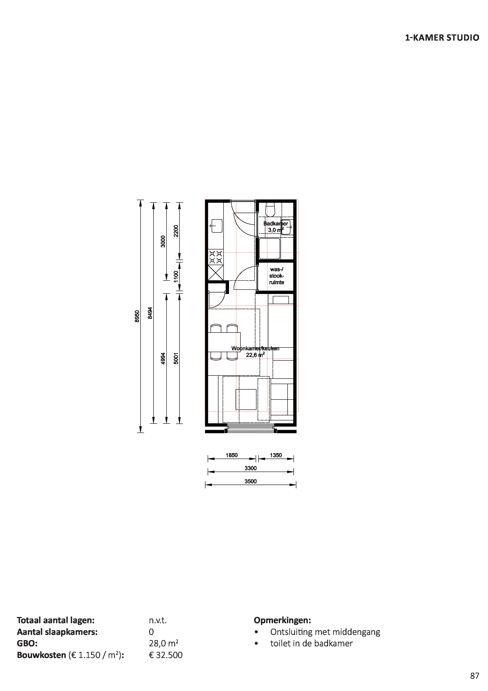

Process
Research
Stairs
Free space residences +/- 270 cm 270 cm= 1 height?
270/6= 45 270/9= 30 270/5= 54 270/3= 90 270/2= 135
Stair dimensions from ‘’menselijke maat’’ : stair angle between 30 and 41 degrees Stair width for moving in 2 directions, minimum 120 cm optrede 14cm advised, minimum of 8cm aantrede minimum 25 cm 38 degrees ideal size for stairs?
Bouwbesluit https://www.bouwbesluitonline.nl/docs/wet/bb2012/hfd2/afd2-5/par2-5-1/art2-33 minimum aantrede 22cm maximum height optrede 0,188cm
Corridor
Main hallways: at least 1,5 metre in width support hallways: at least 1,2 metre in width https://rijksoverheid.bouwbesluit.com/Inhoud/docs/wet/bb2012/hfd4/afd4-4/art4-23
Stairs
Option 1:
Optrede stair= 18cm (3x6) 270/18 = 15 steps
aantrede stair= 30cm (5x6) length stairs= 15x30 = 450cm
width staircase= 120cm (20x6)
Option 2:
optrede stair= 18cm (2x9) 270/18 = 15 steps
aantrede stair= 27cm (3x9) length stairs= 15x27= 405
width staircase= 126 cm(14x9)
_After discussion we decided to enlarge the floor height _
Option 3:
Optrede stair= 18cm (3x6) 306/18 = 17 steps
aantrede stair= 30cm (5x6) length stairs= 17x30 = 510cm
width staircase= 120cm (20x6)
Option 4:
optrede stair= 18cm (2x9) 306/18 = 17 steps
aantrede stair= 27cm (3x9) length stairs= 18x27= 486cm
width staircase= 126 cm(14x9)
Option 5:
Optrede stair= 18cm (3x6) 306/18 = 17 steps
aantrede stair= 24cm (4x6) length stairs= 17x24 = 408cm
width staircase= 120cm (20x6)
for further research we will only use option 3,4&5
Voxel with focus on y dimension
Option 1: based on stairs option 3
divisible by 6 120/ 510 /306 x/y/z
510 is quite a big size, but there’s no division possible which leads to an integer multitude of 6. So this will not be a good voxel size.
Option 2: based on stairs option 4
divisible by 9 126/ 486 /306 x/y/z
to make it fitting for human dimensions let’s divide the the y value by 3->
126/162/306 x/y/z
the stairs which we calculated earlier will now be 3 voxels.
Option 3: based on stairs option 5
divisible by 6 120/ 408 /306 x/y/z
to make it more fitting for human dimensions we can divide the y value by either 2 or 4 ->
divided by 2 120/204/306
The staircase will now be 2 voxels big
divided by 4 120/102/306
the staircase will now be 4 voxels big
The previous voxels will be sufficient for a building with the same height everywhere, but the z value is too big to differ in height.
Voxel with focus z dimension
Option 1: based on voxel option 2 and stairs option 4
divisible by 9
126/162/306 divide the z value with 2-> 126/162/153 the staircase will now be 3x2 voxels 1 by 1.3
Option 2: based on voxel option 3 and stairs option 5
divisible by 6 120/204/102 divide the z value with 3->
The staircase will now be 2x3 voxels 1 by 1.7
Option 3: based on voxel option 3 and stairs option 5
divisible by 6 120/102/306 divide the z value with 3->
the staircase will now be 4x3 1 by 0,85
Title
option 1

Option 2

Option 3

After finding out that all our voxels sizes are quite workable for making rooms, we decided that the aantrede of 24cm in ‘’Option 3: based on voxel option 3 and stairs option 5’’ and ‘’Option 2: based on voxel option 3 and stairs option 5’’ is insufficient, so Option 1: based on voxel option 2 and stairs option 4 is the best option